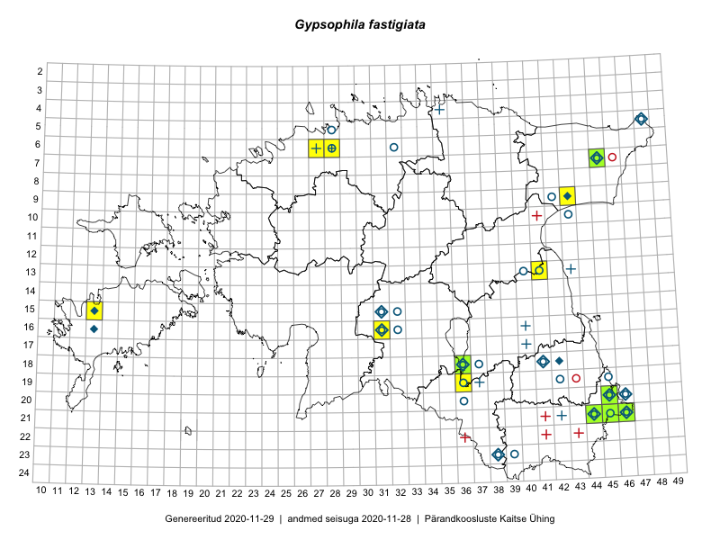

Gypsophila fastigiata — kännas-kipslill
Kaardile koondatud taksonid: Gypsophila fastigiata L. (58)

Kaart põhineb 58 kirjel, neist:
vaatlusi 46
eksemplare 12
Kaasaegsed1 leiukohad asuvad 11 ruudus.
Andmed “Eesti taimede levikuatlasest”,2 sulgudes ruutude arv:3
● 1971–2005 (15)
○ 1921–1970 (18)
△ kuni 1920 (7)
+ hävinud (0)
? kaheldav (0)
Lisaruudud teistest andmebaasidest:4
ELF: 2006– . . . (0)
PKÜ: 2006– . . . (0)
ELF: 1971–2005 (4)
PKÜ: 1997–2005 (0)
| Ruut | Vaatleja(d) | Vaatlusaeg | Kirje PlutoFis |
|---|---|---|---|
| 21-45 | Toomas Kukk, Kersti Tambets, Sten Mander, Janika Sammasto, Timo Luhamäe | 2014-07-30 | ruut/ala: Gypsophila fastigiata L. |
| 21-45 | Rein Kalamees, Kersti Püssa | 2015-07-15 | ruut/ala: Gypsophila fastigiata L. |
| 20-45 | Rein Kalamees, Kersti Püssa | 2015-07-16 | ruut/ala: Gypsophila fastigiata L. |
| 07-45 | Ott Luuk, Hannes Pehlak | 2015-07-22 | ruut/ala: Gypsophila fastigiata L. |
| 15-13 | Mari Reitalu, Oliver Parrest | 2015-05-14 | ruut/ala: Gypsophila fastigiata L. |
| 15-13 | Mari Reitalu, Oliver Parrest | 2015-07-24 | ruut/ala: Gypsophila fastigiata L. |
| 18-36 | Helle Mäemets, Mare Leis | 2015-06-24 | ruut/ala: Gypsophila fastigiata L. |
| 21-44 | Toomas Kukk, Tiit Hallikma, Johannes Kõdar | 2016-06-14 | ruut/ala: Gypsophila fastigiata L. |
| 21-45 | Toomas Kukk, Tiit Hallikma, Johannes Kõdar | 2016-06-14 | ruut/ala: Gypsophila fastigiata L. |
| 21-46 | Timo Luhamäe, Meeli Mesipuu | 2016-06-14 | ruut/ala: Gypsophila fastigiata L. |
| 13-41 | Kai Rünk, Ülle Jõgar, Illi Tarmu | 2016-06-10 | ruut/ala: Gypsophila fastigiata L. |
| 19-36 | Rein Kalamees, Kersti Püssa | 2017-08-24 | ruut/ala: Gypsophila fastigiata L. |
| 21-45 | Meeli Mesipuu | 2017-07-12 | ruut/ala: Gypsophila fastigiata L. |
| 21-44 | Meeli Mesipuu | 2017-07-17 | ruut/ala: Gypsophila fastigiata L. |
| 07-45 | Thea Kull | 2015-04-27 | punkt: Gypsophila fastigiata L. |
| 20-45 | Rein Kalamees, Kersti Püssa | 2015-07-15 | punkt: Gypsophila fastigiata L. |
| 07-45 | Thea Kull, Peedu Saar | 2015-04-27 | punkt: Gypsophila fastigiata L. |
| 21-45 | Rein Kalamees, Kersti Püssa | 2015-07-15 | punkt: Gypsophila fastigiata L. |
| 21-45 | Rein Kalamees, Kersti Püssa | 2015-07-15 | punkt: Gypsophila fastigiata L. |
| 15-13 | Mari Reitalu, Oliver Parrest | 2015-07-24 | punkt: Gypsophila fastigiata L. |
| 15-13 | Mari Reitalu, Oliver Parrest | 2015-05-14 | punkt: Gypsophila fastigiata L. |
| 18-36 | Helle Mäemets, Malle Timm | 2015-06-24 | punkt: Gypsophila fastigiata L. |
| 21-46 | Meeli Mesipuu, Timo Luhamäe | 2016-06-14 | punkt: Gypsophila fastigiata L. |
| 21-46 | Meeli Mesipuu, Timo Luhamäe | 2016-06-14 | punkt: Gypsophila fastigiata L. |
| 21-46 | Meeli Mesipuu, Timo Luhamäe | 2016-06-14 | punkt: Gypsophila fastigiata L. |
| 21-46 | Meeli Mesipuu, Timo Luhamäe | 2016-06-14 | punkt: Gypsophila fastigiata L. |
| 21-45 | Tiit Hallikma, Toomas Kukk, Johannes Kõdar | 2016-06-14 | punkt: Gypsophila fastigiata L. |
| 13-41 | Kai Rünk, Ülle Jõgar, Illi Tarmu | 2016-06-10 | punkt: Gypsophila fastigiata L. |
| 21-44 | Tiit Hallikma, Toomas Kukk, Johannes Kõdar | 2016-06-14 | punkt: Gypsophila fastigiata L. |
| 09-43 | Rein Kalamees, Kersti Püssa | 2016-06-29 | punkt: Gypsophila fastigiata L. |
| 20-45 | Meeli Mesipuu | 2017-08-19 | punkt: Gypsophila fastigiata L. |
| 21-45 | Meeli Mesipuu | 2017-07-12 | punkt: Gypsophila fastigiata L. |
| 07-45 | Meeli Mesipuu | 2017-07-25 | punkt: Gypsophila fastigiata L. |
| 07-45 | Meeli Mesipuu | 2017-07-25 | ruut/ala: Gypsophila fastigiata L. |
| 21-46 | Rein Kalamees | 2018-06-19 | ruut/ala: Gypsophila fastigiata L. |
| 21-46 | Rein Kalamees | 2018-06-19 | punkt: Gypsophila fastigiata L. |
| 21-44 | Toomas Kukk | 2018-06-24 | punkt: Gypsophila fastigiata L. |
| 06-28 | Olev Abner | 2017-07-18 | punkt: Gypsophila fastigiata L. |
| 06-28 | Olev Abner | 2017-07-18 | punkt: Gypsophila fastigiata L. |
| 07-45 | Toomas Kukk, Thea Kull, Külli Annamaa, Rene Aavola | 2019-09-12 | punkt: Gypsophila fastigiata L. |
| 21-45 | Peedu Saar, Ott Luuk | 2019-09-24 | ruut/ala: Gypsophila fastigiata L. |
| 21-46 | Ott Luuk, Peedu Saar | 2019-09-24 | punkt: Gypsophila fastigiata L. |
| 21-45 | Ott Luuk, Peedu Saar | 2019-09-24 | punkt: Gypsophila fastigiata L. |
| 07-45 | Thea Kull, Toomas Kukk | 2019-09-12 | ruut/ala: Gypsophila fastigiata L. |
| 07-45 | Thea Kull, Toomas Kukk | 2019-09-12 | punkt: Gypsophila fastigiata L. |
| 18-36 | Peedu Saar, Ott Luuk | 2019-07-16 | punkt: Gypsophila fastigiata L. |
| 21-45 | J.-M. Habicht | 2011-06-30 | TAM0030825: Gypsophila fastigiata L. |
| 21-45 | J.-M. Habicht | 2011-06-30 | TAM0030826: Gypsophila fastigiata L. |
| 21-44 | Jana-Maria Habicht | 2014-07-19 | TAM0122503: Gypsophila fastigiata L. |
| 21-44 | Toomas Kukk, Tiit Hallikma, Johannes Kõdar | 2016-06-14 | TAA0138117: Gypsophila fastigiata L. |
| 21-45 | Timo Luhamäe | 2015-07-06 | TAA0143968: Gypsophila fastigiata L. |
| 21-45 | Timo Luhamäe | 2015-07-06 | TAA0143969: Gypsophila fastigiata L. |
| 18-36 | Helle Mäemets | 2015-06-25 | TAA0143293: Gypsophila fastigiata L. |
| 21-46 | Timo Luhamäe, Meeli Mesipuu | 2016-06-14 | TAA0144661: Gypsophila fastigiata L. |
| 21-45 | Meeli Mesipuu | 2017-07-19 | TAA0145054: Gypsophila fastigiata L. |
| 20-45 | Meeli Mesipuu | 2017-07-12 | TAA0145075: Gypsophila fastigiata L. |
| 07-45 | Ott Luuk, Hannes Pehlak | 2015-07-22 | TAA0143024: Gypsophila fastigiata L. |
| 21-44 | Indrek Tammekänd | 2019-07-04 | TAA0151991: Gypsophila fastigiata L. |
Kaasaegsed leiukohad (tähistatud värvitud ruutudega) põhinevad peamiselt 2014–2019 välitööandmetel. Väiksemal määral on andmebaasi kantud vanemaid leiuandmeid aastatest 2006–2013.↩︎
Kukk, T., Kull, T., Eesti taimede levikuatlas. Eesti Maaülikool, Põllumajandus- ja Keskkonnainstituut, Tartu, 2005.↩︎
NB! 2005. aasta atlase andmestikus katavad uuemad leiud vanemaid. Näiteks kui liik on ruudus registreeritud 1971–2005, siis pole võimalik öelda, kas ta oli sellest ruudust teada ka enne 1970. aastat. Vana atlase andmetel hävinud ja kaheldavaid leiukohti pole hilisemate (taas)leidude põhjal korrigeeritud.↩︎
Eestimaa Looduse Fondi (ELF) ja Pärandkoosluste Kaitse Ühingu (PKÜ) andmebaasid sisaldavad inventeeritud koosluste kirjeldusi ja liigiloendeid. Neist andmekogudest on kaardile lisatud lisatud vaid need ruudud, millest uue atlase andmekogus taksoni kohta kirjeid veel pole. Kõrvale on jäetud teadaolevalt kaheldavad määrangud. Kaartidel katavad uuema perioodi andmed vanemaid, PKÜ omad ELFi omi. Kattumise tõttu võib kaardil näha olla vähem mingi kategooria ruute kui legendis olev arv näitab. ELFi ja PKÜ andmed ei kajastu hetkel vaatluste tabelis ega ruutude liigiloendites.↩︎